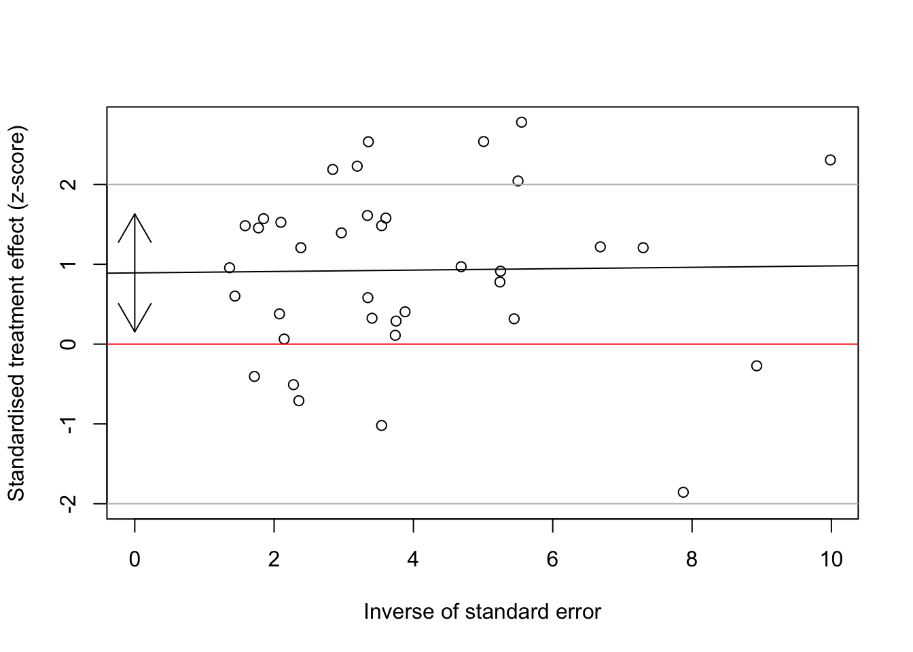

Example 3 - Passive smoking
Association between passive smoking and lung cancer in women (Hackshaw et al, BMJ 1997)
Read in the data:
Then type:
3b. Contour-enhanced funnel plot
funnel(ps.iv, comb.random = F, contour.levels = c(0.9,0.95,0.99), col.contour = c("gray50","gray70","gray90"), ref = exp(ps.iv$TE.fixed))
legend("topright", c("p < 0.01", "0.01 < p < 0.05", "0.05 < p < 0.10", "p > 0.10"), fill=c("gray50","gray70","gray90", 'white'), bg = 'white')
3c. Statistical test for funnel plot asymmetry
ps.bias <- metabias(ps.iv,method.bias="linreg",plotit=T) # T for TRUE
abline(h=c(0,-2,2), col = c("red","gray","gray"))
# segments(0,ps.bias$estimate[1]- 1.96*ps.bias$estimate[2],0,ps.bias$estimate[1]+1.96*ps.bias$estimate[2])
arrows(0,ps.bias$estimate[1],0,ps.bias$estimate[1]-1.96*ps.bias$estimate[2])
arrows(0,ps.bias$estimate[1],0,ps.bias$estimate[1]+1.96*ps.bias$estimate[2])3d. Using the trim and fill method
Compare the pooled effect size before and after trim and fill
## OR 95%-CI %W(random)
## 1 0.7500 [0.4313; 1.3041] 2.3
## 2 2.0700 [0.8131; 5.2699] 0.9
## 3 2.1300 [1.1873; 3.8212] 2.1
## 4 0.8000 [0.3384; 1.8911] 1.1
## 5 0.7900 [0.2524; 2.4730] 0.7
## 6 2.0100 [1.0880; 3.7132] 1.9
## 7 1.2300 [0.8095; 1.8689] 3.3
## 8 1.2000 [0.4671; 3.0828] 0.9
## 9 1.5200 [0.8742; 2.6428] 2.3
## 10 1.0300 [0.4130; 2.5687] 1.0
## 11 1.5500 [0.8999; 2.6697] 2.3
## 12 1.0300 [0.6099; 1.7396] 2.4
## 13 2.3400 [0.8106; 6.7549] 0.7
## 14 1.6500 [1.1593; 2.3485] 4.1
## 15 1.1900 [0.8193; 1.7285] 3.8
## 16 1.5200 [0.3888; 5.9419] 0.5
## 17 2.1600 [1.0838; 4.3049] 1.6
## 18 1.0800 [0.6404; 1.8212] 2.5
## 19 2.5500 [0.7403; 8.7834] 0.6
## 20 1.6200 [0.9009; 2.9130] 2.1
## 21 1.0600 [0.7396; 1.5192] 4.0
## 22 0.7900 [0.6159; 1.0133] 5.7
## 23 0.7400 [0.3220; 1.7006] 1.2
## 24 2.2700 [0.7528; 6.8451] 0.7
## 25 0.9700 [0.7788; 1.2081] 6.2
## 26 1.6000 [0.8262; 3.0983] 1.7
## 27 1.1900 [0.6624; 2.1378] 2.1
## 28 1.6600 [0.7295; 3.7773] 1.2
## 29 1.2600 [1.0354; 1.5332] 6.6
## 30 1.1000 [0.6187; 1.9558] 2.1
## 31 1.6600 [1.1224; 2.4552] 3.6
## 32 1.1600 [0.7981; 1.6860] 3.8
## 33 1.1100 [0.6698; 1.8395] 2.6
## 34 1.1800 [0.9021; 1.5435] 5.3
## 35 1.4500 [1.0154; 2.0706] 4.0
## 36 2.0200 [0.4784; 8.5301] 0.4
## 37 1.2000 [0.8950; 1.6090] 4.9
## Filled: 36 0.6764 [0.1602; 2.8565] 0.4
## Filled: 2 0.6601 [0.2593; 1.6805] 0.9
## Filled: 3 0.6415 [0.3576; 1.1508] 2.1
## Filled: 17 0.6326 [0.3174; 1.2608] 1.6
## Filled: 24 0.6019 [0.1996; 1.8151] 0.7
## Filled: 13 0.5839 [0.2023; 1.6856] 0.7
## Filled: 19 0.5358 [0.1556; 1.8457] 0.6
##
## Number of studies combined: k = 44 (with 7 added studies)
##
## OR 95%-CI z p-value
## Random effects model 1.1886 [1.0802; 1.3079] 3.54 0.0004
##
## Quantifying heterogeneity:
## tau^2 = 0.0260; H = 1.20 [1.00; 1.45]; I^2 = 30.4% [0.0%; 52.1%]
##
## Test of heterogeneity:
## Q d.f. p-value
## 61.79 43 0.0315
##
## Details on meta-analytical method:
## - Inverse variance method
## - DerSimonian-Laird estimator for tau^2
## - Trim-and-fill method to adjust for funnel plot asymmetry